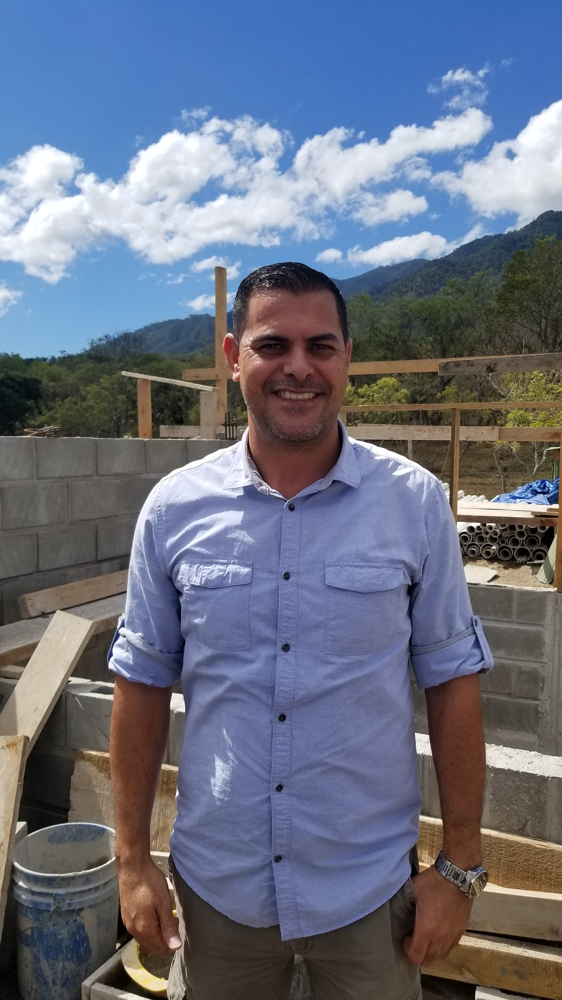

"How did the water look initially?"
"Before, it had a very strong flavor and was quite dirty. It looked like hot chocolate. This situation was unsustainable because
we used that water even to clean our clothes."

| room | Locally constructed using easily accessible materials | settings | Specifically designed to accommodate each unique environment | |
| flash_off | Operates without the use of electricity | attach_money | Optimized for low-cost and high-performance | |
| message | Provides plant operators with helpful feedback for every step of the treatment process | layers | Comprised of movable parts to allow for regular inspection and maintenance |
Testimonials
Our Poster
1 / 8
2 / 8
How did the water affect people's daily lives before having the plant?
"It was impossible to cook. To have a shower, it was necessary to have a water supply from the non-rainy periods. If not, it was a waste of time. Sometimes, one turned on the tap and kept thinking if it was going to get dirtier when leaving the shower than when entering. For these reasons, everyone used bottled water to drink. If you couldn't afford bottled water which was 90% of the population, you had to drink tap water knowing it was contaminated."
"It was impossible to cook. To have a shower, it was necessary to have a water supply from the non-rainy periods. If not, it was a waste of time. Sometimes, one turned on the tap and kept thinking if it was going to get dirtier when leaving the shower than when entering. For these reasons, everyone used bottled water to drink. If you couldn't afford bottled water which was 90% of the population, you had to drink tap water knowing it was contaminated."
3 / 8
How did the water affect people's health before having the plant?
"The infant mortality rate was very high in this area, since it is a very poor area. Particularly I know people who previously suffered from stomach pains, intestinal parasitism, and came to the health center a lot. Now they do not come."
"The infant mortality rate was very high in this area, since it is a very poor area. Particularly I know people who previously suffered from stomach pains, intestinal parasitism, and came to the health center a lot. Now they do not come."
4 / 8
Can you describe changes in the day to day?
"The changes are positive, knowing that the water is of quality we consume it with more confidence. Now we wash the vegetables and fruit with this water that we know is better. We have also somehow noticed that the expenses have been reduced because before, the pipes were more clogged than now. Sometimes you couldn't even wash your clothes because it was dirtying them more. We can shower whenever we want with clean water. We can drink the water directly from the tap, knowing that it will not cause us health problems.""
"The changes are positive, knowing that the water is of quality we consume it with more confidence. Now we wash the vegetables and fruit with this water that we know is better. We have also somehow noticed that the expenses have been reduced because before, the pipes were more clogged than now. Sometimes you couldn't even wash your clothes because it was dirtying them more. We can shower whenever we want with clean water. We can drink the water directly from the tap, knowing that it will not cause us health problems.""
5 / 8

What motivates you to improve the plant?
"I have always been driven by the idea that like you, we need clean water that will not negatively affect my children or my family. We are constantly trying to improve the plant, even sometimes without the permission of AguaClara people. We experiment because we want this to become more than we see."
"I have always been driven by the idea that like you, we need clean water that will not negatively affect my children or my family. We are constantly trying to improve the plant, even sometimes without the permission of AguaClara people. We experiment because we want this to become more than we see."
6 / 8
What is the most satisfying about the plant?
I have always said that the most important thing is not the compensation I receive for the work I do, but the satisfaction of seeing dirty water entering and leaving completely clean.
I have always said that the most important thing is not the compensation I receive for the work I do, but the satisfaction of seeing dirty water entering and leaving completely clean.
7 / 8
What are you most proud of?
"It is satisfying to know that the health of an entire community is in the hands of oneself, and that I can serve people. There must always be concern towards the needs of here, of Honduras; We need people wanting the application of this type of projects, because the results are visible and we can feel them."
"It is satisfying to know that the health of an entire community is in the hands of oneself, and that I can serve people. There must always be concern towards the needs of here, of Honduras; We need people wanting the application of this type of projects, because the results are visible and we can feel them."
8 / 8
What do you think of water?
"Water is the most important. It's the basis of life, which provides us with air, water etc."
"Water is the most important. It's the basis of life, which provides us with air, water etc."